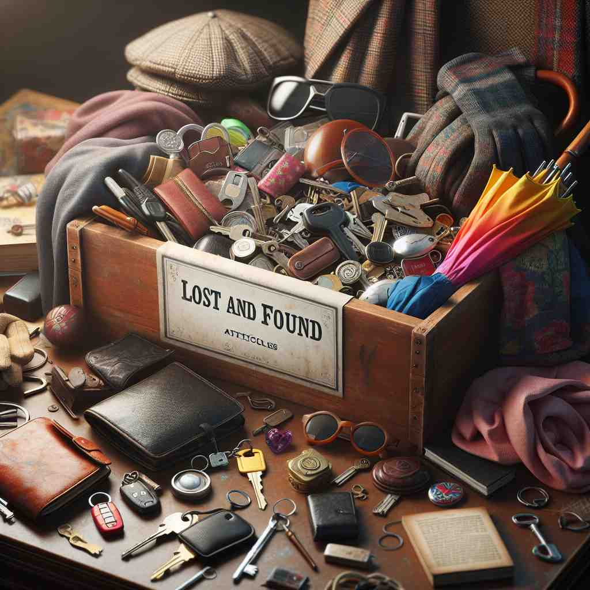

💬 The shop has a new clothing article on display. 店里有一件新的服装展示。

💬 The box contains a lost article that someone may want to reclaim. 箱子里放着一件丢失的物品，可能有人想要认领。
💬 The shop has a new clothing article on display. 店里有一件新的服装展示。
💬 The box contains a lost article that someone may want to reclaim. 箱子里放着一件丢失的物品，可能有人想要认领。
🔈 ['ɑːtɪk(ə)l]
💬 I read an interesting article about dinosaurs in the magazine. 我在杂志上读到一篇关于恐龙的有趣文章。
🔍 文章: 杂志里有一页纸，上面写了很多关于恐龙的字，还有一些恐龙的图片。这就是一篇关于恐龙的“文章”，就像你在语文课本里读到的故事一样。
💬 The newspaper article described the details of the robbery. 报纸上的文章描述了抢劫案的细节。
🔍 文章: 报纸上有一块地方，上面写了很多关于抢劫案的字，例如：小偷是谁，抢了什么东西，什么时候发生的。这就是一篇关于抢劫案的“文章”，就像你看到的寻人启事一样，上面写了关于失踪人的信息。
💬 She wrote an article about her travels in Europe for the school newspaper. 她为校报写了一篇关于她在欧洲旅行的文章。
🔍 文章: 她在纸上写了很多关于她在欧洲旅行的事情，例如：她去了哪些地方，看到了什么风景，吃了什么好吃的。这就是一篇关于她旅行的“文章”，就像你写日记一样，记录你每天发生的事情。
💬 This article is about the dangers of smoking. 这篇文章是关于吸烟的危害的。
🔍 文章: 这篇文章里写了很多关于吸烟会对身体造成哪些伤害的文字。例如：吸烟会导致咳嗽、肺癌等等。就像你在健康教育课本里读到的关于健康的知识一样。
🧠 “article” 的核心意思是：一篇写了很多字，用来讲述特定主题、事件或提供信息的文字作品，它可以出现在杂志、报纸、网站或其他出版物中。
⬅️ essay（散文）、report（报告）、story（故事）：这些词都表示用文字表达信息，但侧重点不同。“essay” 通常是表达个人观点或想法。“report” 侧重于对特定主题的调查和分析。“story” 则侧重于叙述一个事件或故事。
🔀 advertisement（广告）：虽然广告也包含文字，但它的目的是为了宣传商品或服务，而不是提供信息或讲述故事。
🌳 词根 'art-' 来源于拉丁语 'articulus'，意为 '连接'，附有名词后缀 '-icle'，构成 'article'，表示 '文章，条款，物品'。
💡 记忆 'article' 时，可以联想为 'art' 和 '小物品'，即由 'art-' 制成的小作品、文章或条款，通过这种联想更易于理解和记忆。
🗝️ n. a piece of writing in a newspaper or magazine 报纸或杂志上的文章
🎭 在一个咖啡馆的角落里，一位记者忙碌地在笔记本上打字。他正在为报纸撰写一篇深入调查的“article”，希望通过这篇文章揭示城市交通问题的真相。
💬 She wrote an article about climate change for the local newspaper. 她为当地报纸写了一篇关于气候变化的文章。
🤔 作为出版物中的一个独立部分
🗝️ n. a particular item for sale 特定的待售商品
🎭 在一个繁华的集市上，各种商品琳琅满目。一位顾客停在一个手工制品摊位前，看中了一件特别的手工“article”，准备购买它作为礼物。
💬 This article of clothing is on sale. 这件衣服正在打折。
🤔 商品作为商店库存的一个独立单位
🗝️ n. a word used before a noun to indicate if it's specific or general (a, an, the) 用在名词前的词，用于指示其是特定的还是一般的（a, an, the）
🎭 在一个英语课堂上，老师在黑板上写下几个句子。她强调一些句子中的“a”、“an”和“the”，解释这些词是如何用来表示名词是特定的还是一般的，每一个都称为“article”。
💬 In English, 'the' is called the definite article. 在英语中，“the”被称为定冠词。
🤔 在语法中作为名词前的独立成分
🗝️ n. a clause or section in a legal document 法律文件中的条款或章节
🎭 在一间律师事务所里，一位律师正专注地研究合同。他逐条检查合同的每个“article”，确保所有条款和条件都符合客户的利益。
💬 The lawyer referred to Article 5 of the contract. 律师提到了合同的第五条。
🤔 作为法律文件中的独立部分